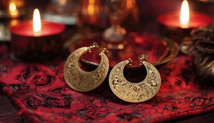

Throughout history, the act of piercings has been practiced for thousands of years across many cultures as forms of self-expression, spirituality, and social identity. Archaeological evidence shows ear piercings in ancient civilizations such as Egypt, where jewelry symbolized wealth and status, and in South Asia, where piercings were connected to religious and cultural traditions. Indigenous cultures across Africa and America also used body piercings to mark rites of passage, beauty standards, or community belonging. In modern times, piercings have shifted from traditional and ritual meanings to mainstream fashion and personal expression, reflecting changing social norms and individual identity. Just over the past decade, body modifications and piercings have risen in popularity, which makes it important to consider what types are available, how to find a reputable piercer, what jewelry is right for your body, and most importantly, how to care for your new piercing! The process can be daunting for new customers, but it doesn’t have to be. Caring for your new piercing means looking to care for your body in a new way, and it takes commitment.
PIERCING TYPES